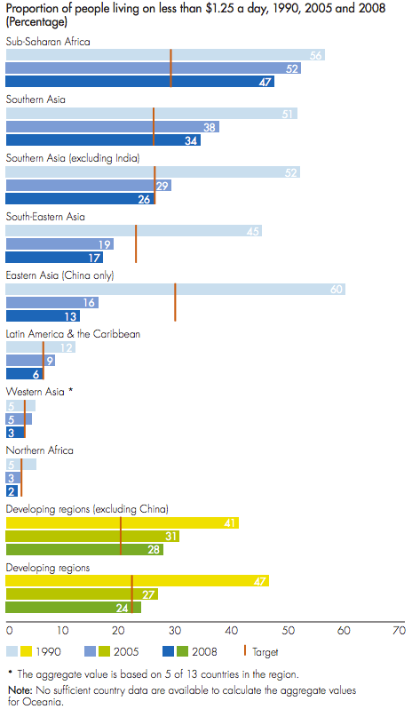

Here is a quote typical of the MDG effort, from their
2012 Annual Report:
Extreme poverty is falling in every region
For the first time since poverty trends began to be monitored,
the number of people living in extreme poverty and poverty
rates fell in every developing region - including in subSaharan
Africa, where rates are highest. The proportion of
people living on less than $1.25 a day fell from 47 per cent
in 1990 to 24 per cent in 2008 - a reduction from over
2 billion to less than 1.4 billion.
To support this statement and additional discussion, they provide the
following visualization on page 10 of the annual report:

Some interesting properties of this visualization are: